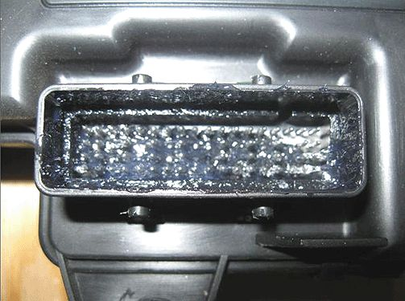
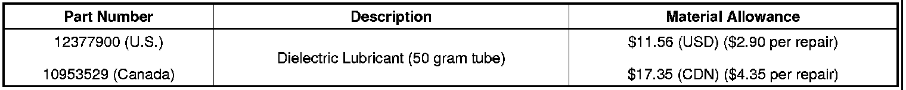
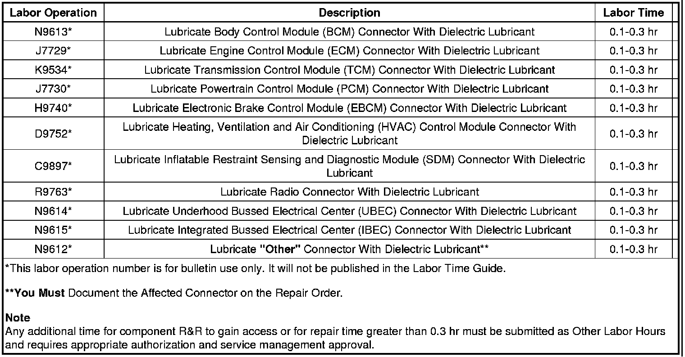
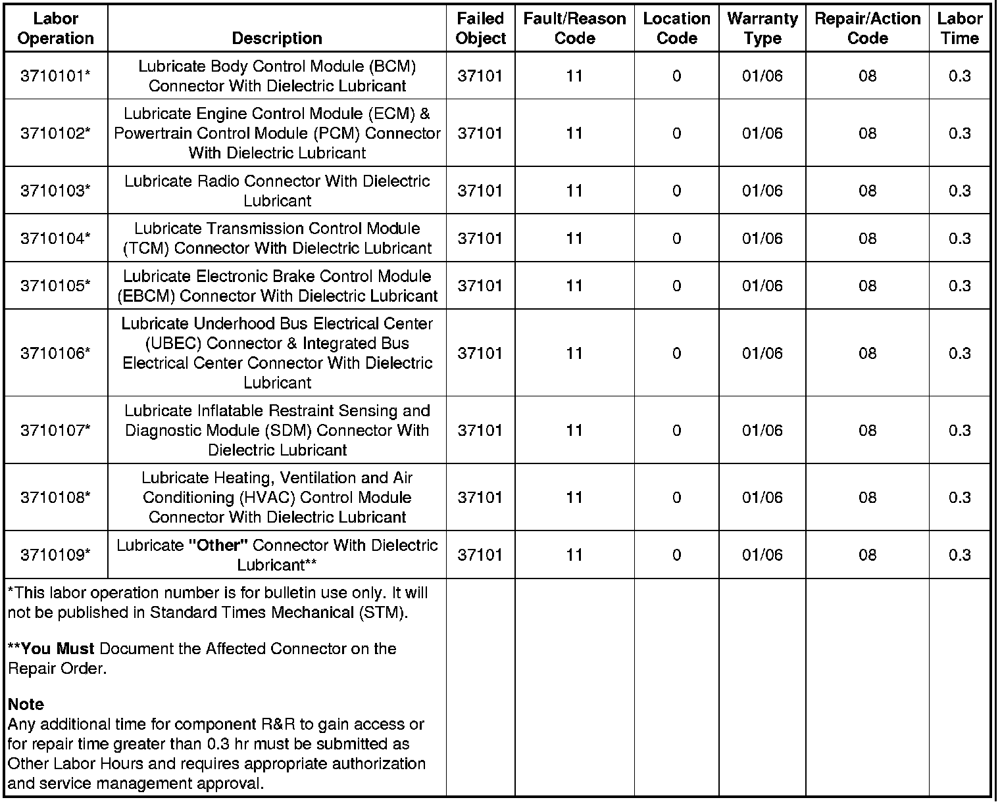

Electrical - MIL ON/DTC's Set By Various Control Modules
TECHNICALBulletin No.: 09-06-03-004D
Date: December 08, 2010
Subject: Intermittent No Crank/No Start, No Module Communication, MIL, Warning Lights, Vehicle Messages or DTCs Set by Various Control Modules - Diagnosing and Repairing Fretting Corrosion (Disconnect Affected Connector and Apply Dielectric Lubricant)
Models:
2011 and Prior GM Passenger Cars and Trucks
Attention:
This repair can be applied to ANY electrical connection including, but not limited to: lighting, body electrical, in-line connections, powertrain control sensors, etc. DO NOT over apply lubricant to the point where it prevents the full engagement of sealed connectors. A light coating on the terminal surfaces is sufficient to correct the condition.
Supercede:
This bulletin is being revised to update the Attention statement and add the 2011 model year. Please discard Corporate Bulletin Number 09-06-03-004C (Section 06 - Engine/Propulsion System).
Condition
Some customers may comment on any of the following conditions:
- An intermittent no crank/no start
- Intermittent malfunction indicator lamp (MIL) illumination
- Intermittent service lamp illumination
- Intermittent service message(s) being displayed
The technician may determine that he is unable to duplicate the intermittent condition.
Cause
This condition may be caused by a buildup of nonconductive insulating oxidized debris known as fretting corrosion, occurring between two electrical contact surfaces of the connection or connector. This may be caused by any of the following conditions:
- Vibration
- Thermal cycling
- Poor connection/terminal retention
- Micro motion
- A connector, component or wiring harness not properly secured resulting in movement
On low current signal circuits this condition may cause high resistance, resulting in intermittent connections.
On high current power circuits this condition may cause permanent increases in the resistance and may cause a device to become inoperative.
Representative List of Control Modules and Components
The following is only a representative list of control modules and components that may be affected by this connection or connector condition and DOES NOT include every possible module or component for every vehicle.
- Blower Control Module
- Body Control Module (BCM)
- Communication Interface Module (CIM)
- Cooling Fan Control Module
- Electronic Brake Control Module (EBCM)
- Electronic Brake and Traction Control Module (EBTCM)
- Electronic Suspension Control (ESC) Module
- Engine Control Module (ECM)
- Heating, Ventilation and Air Conditioning (HVAC) Control Module
- HVAC Actuator
- Inflatable Restraint Sensing and Diagnostic Module (SDM)
- Any AIR BAG module
- Seatbelt Lap Anchor Pretensioner
- Seatbelt Retractor Pretensioner
- An SIR system connection or connector condition resulting in the following DTCs being set: B0015, B0016, B0019, B0020, B0022, or B0023
- Powertrain Control Module (PCM)
- Remote Control Door Lock Receiver (RCDLR)
- Transmission Control Module (TCM)
Correction
Important
DO NOT replace the control module, wiring or component for the following conditions:
- The condition is intermittent and cannot be duplicated.
- The condition is present and by disconnecting and reconnecting the connector the condition can no longer be duplicated.
Use the following procedure to correct the conditions listed above.
1. Install a scan tool and perform the Diagnostic System Check - Vehicle. Retrieve and record any existing history or current DTCs from all of the control modules (refer to SI).
• If any DTC(s) are set, refer to Diagnostic Trouble Code (DTC) List - Vehicle to identify the connector(s) of the control module/component which may be causing the condition (refer to SI).
• If DTCs are not set, refer to Symptoms - Vehicle to identify the connector(s) of the control module/component which may be causing the condition (refer to SI).
2. When identified, use the appropriate DTC Diagnostics, Symptoms, Schematics, Component Connector End Views and Component Locator documents to locate and disconnect the affected harness connector(s) which are causing the condition.
Note
Fretting corrosion looks like little dark smudges on electrical terminals and appear where the actual electrical contact is being made. In less severe cases it may be unable to be seen or identified without the use of a magnifying glass.

Important
DO NOT apply an excessive amount of dielectric lubricant to the connectors as shown, as hydrolock may result when attempting to mate the connectors. Use ONLY a clean nylon brush that is dedicated to the repair of the conditions in this bulletin.
3. With a one-inch nylon bristle brush, apply dielectric lubricant to both the module/component side and the harness side of the affected connector(s).
4. Reconnect the affected connector(s) and wipe away any excess lubricant that may be present.
5. Attempt to duplicate the condition by using the following information:
- DTC Diagnostic Procedure
- Circuit/System Description
- Conditions for Running the DTC
- Conditions for Setting the DTC
- Diagnostic Aids
- Circuit/System Verification
• If the condition cannot be duplicated, the repair is complete.
• If the condition can be duplicated, then follow the appropriate DTC, Symptom or Circuit/System Testing procedure (refer to SI).
Repair Order Documentation
Important
The following information MUST be documented on the repair order. Failure to do so may result in a chargeback.
- Customer vehicle condition.
- Was a Service Lamp or Service Message illuminated? If yes, specify which Service Lamp or Service Message.
- Was a DTC(s) set? If yes, specify which DTC(s) were set.
- After following the procedure contained within this bulletin, could the condition be duplicated?
• If the condition was not duplicated, then document the affected module/component connector name and number on the repair order.
- If the condition was duplicated after the procedure contained within this bulletin was followed, and additional diagnosis led to the replacement of a module or component, the SI Document ID Number MUST be written on the repair order.
Parts Information

Alternate Distributor For All of North America
Note
NyoGel(R) 760G Lubricant* is equivalent to GMSPO P/N 12377900, and P/N 10953529 (Canada), specified for use to correct the condition in this bulletin.
*We believe this source and their products to be reliable. There may be additional manufacturers of such products/materials. General Motors does not endorse, indicate any preference for, or assume any responsibility for the products or material from this firm or for any such items that may be available from other sources.
Warranty Information (excluding Saab Models)
For vehicles repaired under warranty, use the appropriate/closest labor operation depending upon the module/component connection that the dielectric lubricant was applied to:

Warranty Information (Saab Models)

For vehicles repaired under warranty, use the appropriate/closest labor operation depending upon the module/component connection that the dielectric lubricant was applied to refer to the table above.

Disclaimer